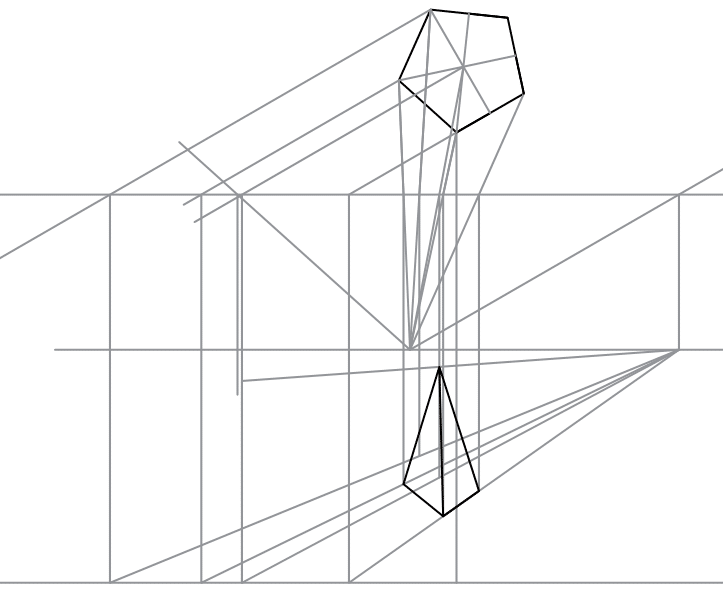

Perspective Drawing - Solutions
-
A right pentagonal base pyramid of 25mm base side and axial height 65mm resting on by its
base, one side
of base is inclined to picture plane at 30 degree to right side, one nearest corner of base is 20 mm
behind the picture plane. The station point is 50 mm in front of picture plane and 75 mm above ground
plane and center plane lies 15 mm left to the nearest corner. Draw the perspective view of the Pyramid.
[]
Show Answer